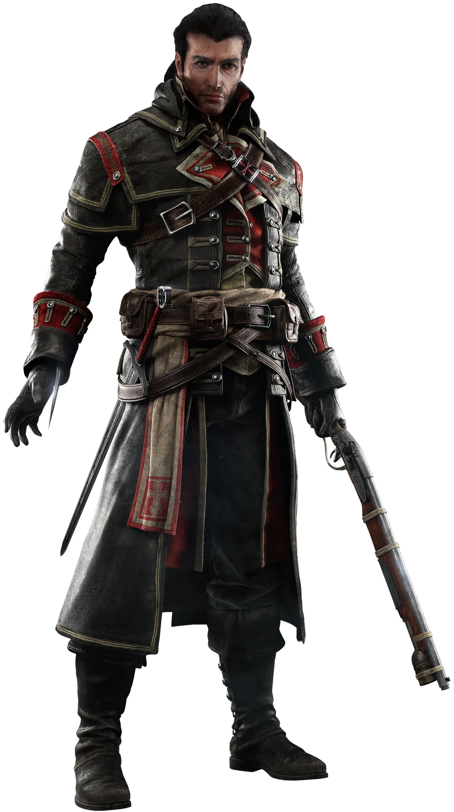

Shay Cormac

Shay Patrick Cormac (1731 - ¿?) fue un marinero estadounidense de familia irlandesa que, tras la muerte de su padre, se unió a la Orden de los Asesinos; no obstante, su conflicto con esta le llevó a unirse a la Orden de los Templarios, convirtiéndose en uno de los más famosos cazadores de Asesinos de todos los tiempos.